天文 |
气象 |
板路 |
折腾 |
老本行 |
本站 |
|
发信人：gw_, 信区：天文→其他
标 题：谈古论今――中西星名对照表
发信站：板路 (2015年02月23日11时,星期一), 本站
本文于2007-10-02 15:16:08首发 天文在线 论坛，因论坛运
行不稳定，为方便查阅资料，在征得作者允许后，站长将文章转载
至本站，并稍作修改使之更符合本站的阅读风格。――转者按
对了，作者让我注明：“本文仅供参考”。――转者又按
本文中共有50张图片，43张直接显示于页面中，剩下的以超链
接形式发布，可点开查看或右键另存为。显示出来的图片大概共有
10MB，若使用流量上网，现在关掉页面还来得及。――转者接着按
本人发在资源共享版的星表已经接近尾声，因本人知识有限，
在各位同好的帮助下也发现了原帖中的一些错误，在此特重新建立
一个新的星表，加入部分坛友提供的图片，方便大家更直观的了解
中国的古星官系统，遗憾的是，关于增星的知识仍然是我所不得掌
握的，在这里也再次呼唤了解增星的朋友赐教。
同时，大家如发现本帖的错误，请及时通知，以便于我在最快
的速度内修改，谢谢大家。
再次说明一下，有些星官的字我现在使用的输入法打不出来，
遇到这样的字我会及时说明，哪位朋友打出来了或者能从别处复制
过来也万望马上发给我好做出正确的更正。
有些恒星从星官图上看我能知道所在星座座，但是从6等的星图
却找不到对应的星，所以后面就空下了，还有找到了对应的星，却
不知道国际通用名字，所以只留下了星等。希望大家见谅。
下面的图片是pluto提供的。――中国星名表.jpg
星官检索部分
[凡例]
1.以下星官名按汉语拼音音序排列。
2.点击星官名可跳转至星表位置，亦可使用Ctrl+F功能搜索。
B
八毂，八魁，败瓜，败臼，北斗，北河，北极，北落师门，毕宿，
壁宿，鳖，波斯，帛度
C
厕，策，长沙，长垣，常陈，车府，车骑，车肆，杵，杵，�e藁，
传舍，传说，从官，从官
D
大角，大理，大陵，氐宿，帝席，帝座，东咸，斗，斗宿，顿顽
F
伐，罚，房宿，飞鱼，坟墓，�a钺，�a�@，扶筐，辅，附白，附耳，
附路
G
盖屋，杠，阁道，梗河，勾陈，钩钤，狗，狗国，��，贯索，龟，
鬼宿
H
海山，海石，河鼓，鹤，衡，候，斛，瓠瓜，弧矢，虎贲，华盖，
宦者，火鸟
J
积尸，积尸气，积水，积水，积薪，积卒，箕宿，夹白，建，
键闭，渐台，井宿，九坎，酒旗，九��，臼，卷舌，军井，
军南门，军市，金鱼
L
郎将，郎位，老人，雷电，垒壁阵，离宫，离瑜，离珠，砺石，
列肆，灵台，柳宿，六甲，娄宿，罗堰
N
南船，南河，南门，内厨，内阶，内平，内屏，辇道，鸟喙，
牛宿，农丈人，女床，女史，女宿
S
三公，三公，三角形，三师，三台，尚书，少微，蛇腹，蛇首，
蛇尾，参旗，参宿，神宫，十二国，十字，屎，室宿，势，
市楼，水府，水委，水位，司非，司怪，司禄，司命，司危，
四渎，四辅，孙
T
太微右垣，太微左垣，太阳守，太乙，太尊，腾蛇，天阿，天��，
天弁，天仓，天谗，天厨，天船，天床，天大将军，天桴，天辐，
天纲，天高，天钩，天狗，天关，天潢，天溷，天鸡，天记，
天纪，天江，天街，天节，天津，天厩，天狼，天牢，天垒城，
天理，天廪，天门，天钱，天枪，天��，天乳，天社，天市右垣，
天市左垣，天田，天田，天相，天乙，天阴，天庾，天渊，天园，
天苑，天�a，天柱，天樽，土公，土公吏，土司空，屠肆
W
外厨，外屏，王良，危宿，尾宿，胃宿，文昌，五车，五帝内座，
五帝座，五诸侯，五诸侯
X
西咸，奚仲，咸池，相，小斗，心宿，星宿，幸臣，虚梁，虚宿，
轩辕，玄戈
Y
阳门，野鸡，谒者，异雀，翼宿，阴德，右更，右旗，右摄提，
右辖，鱼，羽林军，玉皇大帝，玉井，御女，月，云雨
Z
造父，张宿，丈人，招摇，折威，轸宿，阵车，织女，周鼎，
诸王，柱，柱，柱史，觜宿，子，紫微右垣，紫微左垣，宗，
宗人，宗正，左更，左旗，左摄提，左辖，座旗
星表部分
中名 西译名 视星等
紫微垣星表：三十七星官163星增177星。
1.北极：5星增4星（庶子增三星后宫增一星）
太子，北极一 小熊γ 3.05
帝，北极二 小熊β 2.08
庶子，北极三 小熊5 4.27
后宫，北极四 小熊4 4.82
天枢，北极五 鹿豹 5.40
2.四辅：4星增1星
四辅一 鹿豹
四辅二 鹿豹 5.54
四辅三 鹿豹 5.27
四辅四 鹿豹
3.勾陈：6星增10星
勾陈一 小熊α 2.02
勾陈二 小熊δ 4.36
勾陈三 小熊ε 4.23
勾陈四 小熊ζ 4.32
勾陈五 仙王 4.26
勾陈六 仙王 4.72
勾陈增五 小熊λ 6.33
勾陈增九 小熊η 4.97
4.玉皇大帝：1星
玉皇大帝 仙王ｏ 5.29
pluto（2012年04月11日）加注：根据wxj的发现，此星究竟是“玉皇大帝”还是“天
皇大帝”，应加进一步考订。这里文本是“玉”字，但图中是“天”字。
5.天柱：5星增6星
天柱一 天龙76 5.77
天柱二 仙王 5.94
天柱三 天龙69 6.22
天柱四 天龙59 5.13
天柱五 天龙41 5.76
6.御女：4星增1星
御女一 天龙τ 4.45
御女二 天龙50 5.39
御女三 天龙 6.41
御女四 天龙χ 3.57
女史增一 天龙ψ 4.58
8.柱史：1星增2星
柱史 天龙φ 4.22
9.尚书：5星增2星
尚书一 天龙27 5.09
尚书二 天龙15 4.96
尚书三 天龙18 4.86
尚书四 天龙 5.28
尚书五 天龙19 4.90
10.天床：6星增1星
天床一 小熊 5.20
天床二 小熊 5.17
天床三 天龙 5.21
天床四 天龙 5.46
天床五 小熊 4.65
天床六 小熊
11.大理：2星增1星
大理一 鹿豹 5.16
大理二 鹿豹 5.80
12.阴德；2星增1星
阴德一 天龙 4.88
阴德二 天龙 6.55
13.六甲：6星增1星
六甲一 鹿豹 5.46
六甲二 鹿豹 4.57
六甲三 鹿豹 5.41
六甲四 鹿豹 4.94
六甲五 仙王 5.11
六甲六 鹿豹 5.10
14.五帝内座：5星增2星
五帝内座一 仙王 5.51
五帝内座二 仙后47 5.29
五帝内座三 仙王 5.82
五帝内座四 仙王 5.46
五帝内座五 仙王 5.12
15.华盖：7星
华盖一 仙后
华盖二 仙后40 5.30
华盖三 仙后 5.89
华盖四 仙后31 5.34
华盖五 仙后ψ 4.74
华盖六 仙后43 5.59
华盖七 仙后ω 4.99
杠：9星增1星（附华盖为一座）
杠一 鹿豹γ 4.61
杠二 仙后 4.87
杠三 仙后49 5.24
杠四 仙后 6.14
杠五 仙后50 3.97
杠六 仙后 6.59
杠七 仙后48 4.51
杠八 仙后42 5.20
杠九 仙后38 5.84
16.紫微右垣：7星增12星（少尉增2星，上辅增2星，少辅增1星，
上卫增3星，少卫增1星，上丞增3星）
右枢，紫微右垣一 天龙α 3.65
少尉，紫微右垣二 天龙κ 3.87
上辅，紫微右垣三 天龙λ 3.84
少辅，紫微右垣四 大熊24 4.56
上卫，紫微右垣五 鹿豹43 5.13
少卫，紫微右垣六 鹿豹α 4.29
上丞，紫微右垣七 鹿豹 4.76
17.紫微左垣：8星增12星（上卫增3星，少卫增8星，少丞增1星）
左枢，紫微左垣一 天龙ι 3.29
上宰，紫微左垣二 天龙θ 4.01
少宰，紫微左垣三 天龙η 2.74
上弼，紫微左垣四 天龙ζ 3.17
少弼，紫微左垣五 天龙υ 4.82
上卫，紫微左垣六 天龙73 5.20
少卫，紫微左垣七 仙王π 4.43
少丞，紫微左垣八 仙后23 5.44
上卫增一 仙王β 3.23
少卫增七 仙王ρ 5.47
少卫增八 仙王γ 3.21
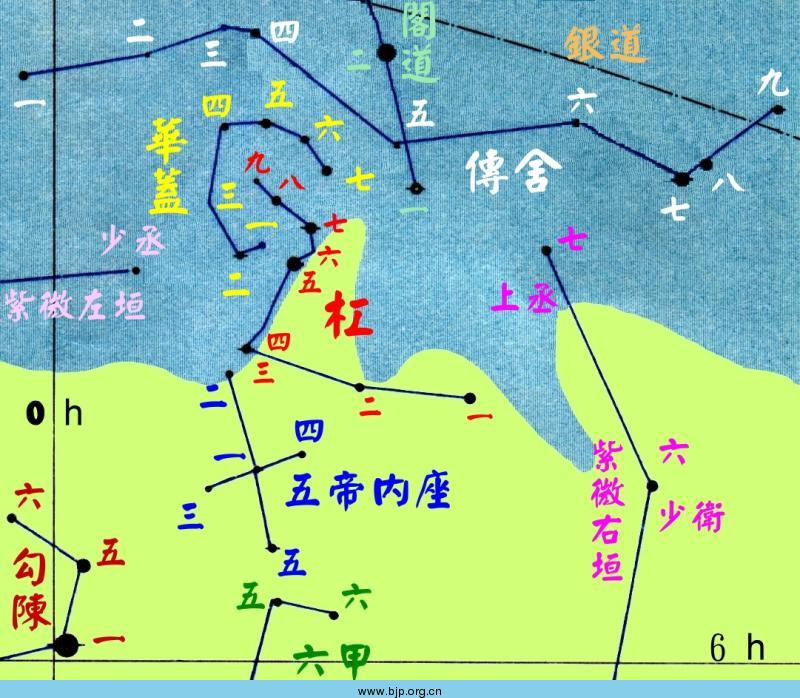
20.内厨：2星增2星
内厨一 天龙7 5.49
内厨二 天龙8 5.25
21.北斗：7星增16星（天枢增3星，天璇增8星，天权增3星，开阳增2星）
天枢，北斗一 大熊α 1.79
天璇，北斗二 大熊β 2.37
天玑，北斗三 大熊γ 2.44
天权，北斗四 大熊δ 3.31
玉衡，北斗五 大熊ε 1.77
开阳，北斗六 大熊ζ 2.27
摇光，北斗七 大熊η 1.86
辅：1星增3星（附北斗为一座）
辅 大熊80 4.01
22.天枪：3星增4星
天枪一 牧夫κ 4.54
天枪二 牧夫ι 4.75
天枪三 牧夫θ 4.05
玄戈增二 牧夫38 5.78
24.三公：3星
三公一 猎犬
三公二 猎犬24 4.70
三公三 猎犬21 5.16
26.天理：4星增1星
天理一 大熊 6.67
天理二 大熊 5.48
天理三 大熊66 5.75
天理四 大熊 5.85
29.天牢：6星增2星
天牢一 大熊ω 4.71
天牢二 大熊57 4.78
天牢三 大熊47 5.05
天牢四 大熊58 5.96
天牢五 大熊49 5.08
天牢六 大熊56 5.01
30.势：4星增16星
势一 小狮34 5.59
势二 小狮33 5.92
势三 小狮42 5.38
势四 大熊46 3.81
31.文昌：6星增8星
文昌一 大熊28 6.53
文昌二 大熊υ 3.83
文昌三 大熊φ 4.59
文昌四 大熊θ 3.17
文昌五 大熊15 4.48
文昌六 大熊18 4.82
32.内阶：6星增10星
内阶一 大熊ο 3.36
内阶二 大熊16 5.20
内阶三 大熊6 5.59
内阶四 大熊23 3.67
内阶五 大熊5 5.74
内阶六 大熊17 5.30
内阶增七 大熊π2 4.61
33.三师：3星增3星
三师一 大熊ρ 3.76
三师二 大熊
三师三 大熊σ1 4.80
34.八毂：8星增34星
八毂一 御夫δ 3.74
八毂二
八毂三 鹿豹24 6.07
八毂四
八毂五 鹿豹7 4.45
八毂六 鹿豹
八毂七 鹿豹11 5.24
八毂八 鹿豹31 5.22
八毂增十四 鹿豹β 4.03
35.传舍：9星增4星
传舍一 仙王 5.07
传舍二 仙后13 6.20
传舍三 仙后 5.37
传舍四 仙后32 5.59
传舍五 仙后55 6.05
传舍六 仙后 5.61
传舍七 鹿豹B 4.23
传舍八 鹿豹C 4.57
传舍九 鹿豹D 5.11
36.天厨：6星增2星
天厨一 天龙δ 3.07
天厨二 天龙σ 4.68
天厨三 天龙ε 3.83
天厨四 天龙ρ 4.51
天厨五 天龙64 5.24
天厨六 天龙π 4.59
37.天��：5星增10星
天��一 天龙ξ 3.75
天��二 天龙ν 4.88
天��三 天龙β 2.79
天��四 天龙γ 2.23
天��五 武仙ι 3.84
天��增九 天龙μ 4.93
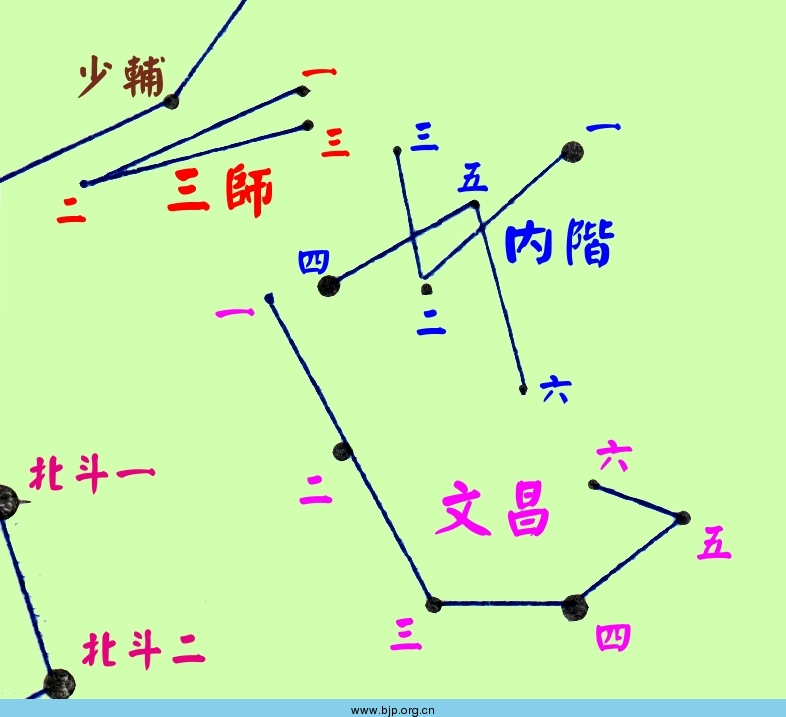
太微垣星表：二十星官78星增93星
1.五帝座：5星增3星
五帝座一 狮子β 2.14
五帝座二 狮子 6.07
五帝座三 狮子 6.53
五帝座四 狮子95 5.55
五帝座五 狮子 6.39
5.五诸侯：5星增7星
五诸侯一 后发39 6.02
五诸侯二 后发36 4.78
五诸侯三 后发27 5.14
五诸侯四 后发
五诸侯五 后发6 5.11
6.九卿：3星增9星
九卿一 室女ρ 4.88
九卿二 室女32 5.24
九卿三 室女 6.07
7.三公：3星
三公一 室女
三公二 室女31 5.59
三公三 室女35 6.44
8.内屏：4星增6星
内屏一 室女ξ 4.95
内屏二 室女ν 4.03
内屏三 室女π 4.66
内屏四 室女ο 4.12
9.太微右垣：5星增5星（西次相增3星，西上相增2星）
右执法，太微右垣一 室女β 3.61
西上将，太微右垣二 狮子σ 4.05
西次将，太微右垣三 狮子ι 3.94
西次相，太微右垣四 狮子θ 3.34
西上相，太微右垣五 狮子δ 2.56
10.太微左垣：5星增7星（左执法增1星，东次相增1星，
东次将增3星，东上将增2星）
左执法，太微左垣一 室女η 3.89
东上相，太微左垣二 室女γ 3.48
东次相，太微左垣三 室女δ 3.38
东次将，太微左垣四 室女ε 2.83
东上将，太微左垣五 后发α 4.32
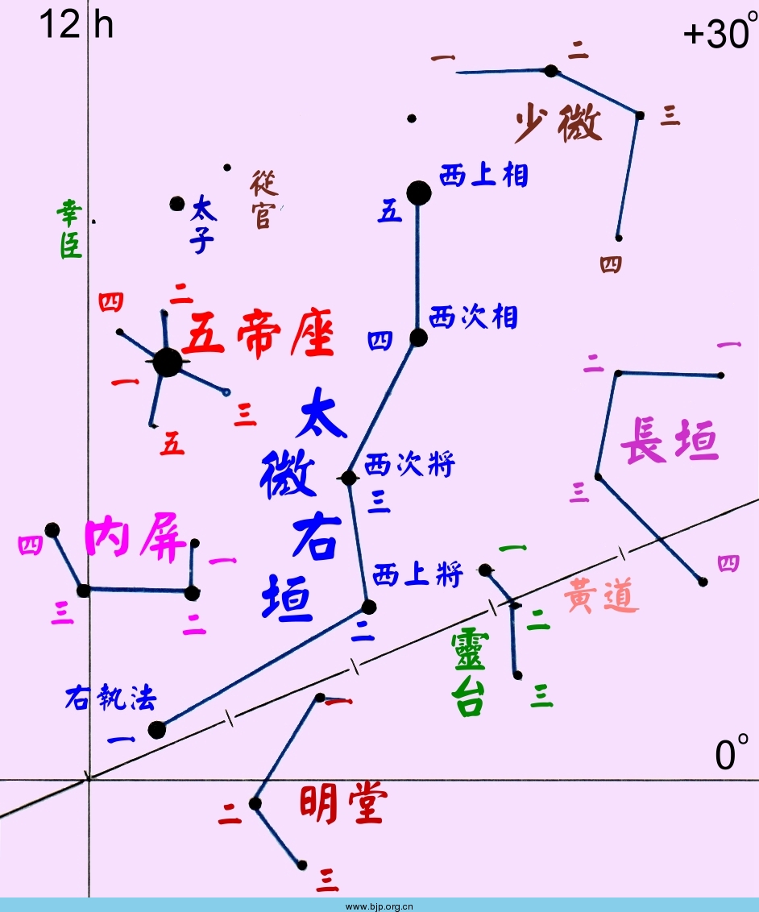
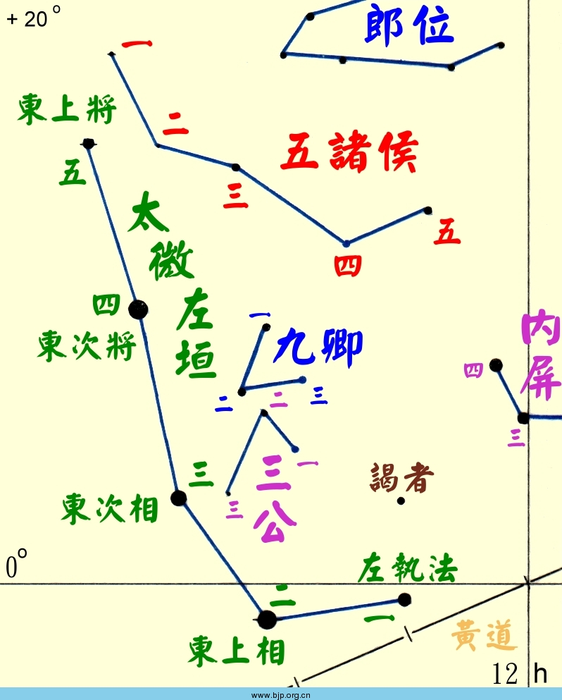
12.郎位：15星增3星
郎位一 后发γ 4.36
郎位二 后发
郎位三 后发14 4.94
郎位四 后发16 5.00
郎位五 后发17 5.31
郎位六 后发13 5.19
郎位七 后发12 4.80
郎位八 后发21 5.49
郎位九 后发18 5.49
郎位十 后发7 4.95
郎位十一 后发23 4.82
郎位十二 后发26 5.51
郎位十三 后发20 5.70
郎位十四 后发5 5.62
郎位十五 后发2 5.91
13.常陈：7星增6星
常陈一 猎犬α2 2.90
常陈二 猎犬10 5.97
常陈三 猎犬9 6.37
常陈四 猎犬β 4.26
常陈五 猎犬6 5.03
常陈六 猎犬2 5.71
常陈七 大熊67 5.24
14.三台：6星增12星（上台增7星，中台增3星，下台增2星）
上台一 大熊ι 3.14
上台二 大熊κ 3.60
中台一 大熊λ 3.45
中台二 大熊μ 3.05
下台一 大熊ν 3.48
下台二 大熊ξ 4.41
上台增四 天猫31 4.27
16.少微：4星增8星
少微一 狮子67 5.72
少微二 狮子54 4.32
少微三 小狮41 5.10
少微四 狮子51 5.52
17.长垣：4星增9星
长垣一 狮子46 5.45
长垣二 狮子52 5.51
长垣三 狮子53 5.34
长垣四 狮子48 5.09
18.灵台：3星增8星
灵台一 狮子χ 4.63
灵台二 狮子59 5.00
灵台三 狮子58 4.86
19.明堂：3星增6星
明堂一 狮子τ 4.95
明堂二 狮子υ 4.30
明堂三 狮子87 4.79
天市垣星表：十九星官87星增159星
3.宦者：4星增5星
宦者一 武仙 4.99
宦者二 武仙 6.08
宦者三 武仙60 4.91
宦者四 蛇夫37 5.34
4.斗：5星增14星
斗一 武仙ω 4.59
斗二 巨蛇
斗三 巨蛇
斗四 武仙29 4.86
斗五 武仙28 5.65
5.斛：4星增3星
斛一 蛇夫ι 4.38
斛二 蛇夫κ 3.20
斛三 武仙47 5.50
斛四 武仙43 5.17
6.列肆：2星增4星
列肆一 巨蛇σ 4.82
列肆二 蛇夫λ 3.82
7.车肆：2星增8星
车肆一 蛇夫υ 4.82
车肆二 蛇夫20 4.66
8.市楼：6星增1星
市楼一 蛇夫μ 4.62
市楼二 巨蛇ο 4.26
市楼三 蛇夫τ 5.24
市楼四 巨蛇ν 4.33
市楼五 巨蛇 6.22
市楼六 蛇夫
9.宗正：2星增3星
宗正一 蛇夫β 2.77
宗正二 蛇夫γ 3.75
10.宗人：4星增4星
宗人一 蛇夫66 4.81
宗人二 蛇夫67 3.95
宗人三 蛇夫68 4.44
宗人四 蛇夫70 4.05
11.宗：2星
宗一 武仙110 4.21
宗二 武仙111 4.36
12.帛度：2星增3星
帛度一 武仙95 4.28
帛度二 武仙102 4.39
13.屠肆：2星增3星
屠肆一 武仙109 3.87
屠肆二 武仙98 4.98
14.天市右垣：11星增25星（河间增1星，晋增3星，周增14星，
秦增1星，蜀增2星，巴增4星）
河中，天市右垣一 武仙β 2.77
河间，天市右垣二 武仙γ 3.75
晋，天市右垣三 武仙κ 5.00
郑，天市右垣四 巨蛇γ 3.85
周，天市右垣五 巨蛇β 3.67
秦，天市右垣六 巨蛇δ 3.80
蜀，天市右垣七 巨蛇α 2.65
巴，天市右垣八 巨蛇ε 3.71
梁，天市右垣九 蛇夫δ 2.74
楚，天市右垣十 蛇夫ε 3.24
韩，天市右垣十一 蛇夫ζ 2.56
15.天市左垣：11星增44星（魏增8星，赵增3星，九河增1星，
中山增7星，齐增8星，吴越增7星，
徐增4星，东海增4星，宋增2星）
魏，天市左垣一 武仙δ 3.14
赵，天市左垣二 武仙λ 4.41
九河，天市左垣三 武仙μ 3.42
中山，天市左垣四 武仙ο 3.83
齐，天市左垣五 武仙112 5.45
吴越，天市左垣六 天鹰ζ 2.99
徐，天市左垣七 巨蛇θ 4.06
东海，天市左垣八 巨蛇η 3.26
燕，天市左垣九 蛇夫ν 3.34
南海，天市左垣十 巨蛇ξ 3.54
宋，天市左垣十一 蛇夫η 2.43
中山增一 武仙ξ 3.72
中山增二 武仙ν 4.43
齐增五 狐狸α 4.46
吴越增一 天鹰ε 4.04
16.天纪：9星增14星
天纪一 北冕ξ 4.85
天纪二 武仙ζ 2.89
天纪三 武仙ε 3.92
天纪四 武仙59 5.29
天纪五 武仙61 6.21
天纪六 武仙68 4.82
天纪七 武仙 6.06
天纪八 武仙
天纪九 武仙θ 3.86
天纪增一 武仙η 3.50
17.女床：3星
女床一 武仙π 3.19
女床二 武仙69 4.66
女床三 武仙ρ 4.17
18.贯索：9星增13星
贯索一 北冕π 5.59
贯索二 北冕θ 4.16
贯索三 北冕β 3.68
贯索四 北冕α 2.23
贯索五 北冕γ 3.84
贯索六 北冕δ 4.63
贯索七 北冕ε 4.15
贯索八 北冕ι 4.99
贯索九 北冕ρ 5.41
19.七公：7星增16星
七公一 武仙42 4.88
七公二 武仙τ 3.89
七公三 武仙φ 4.26
七公四 武仙χ 4.62
七公五 牧夫ν1 5.02
七公六 牧夫μ1 4.31
七公七 牧夫δ 3.47
七公增五 牧夫β 3.51
七公增十五 武仙σ 4.22
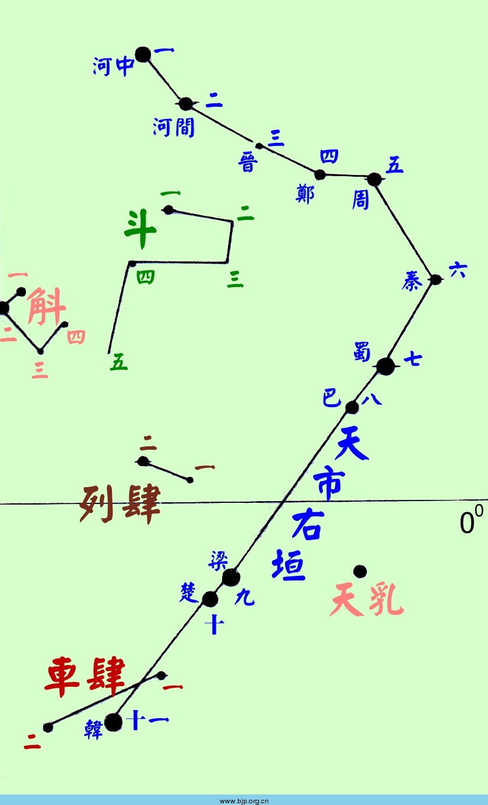
角宿星表：十一星官41星增47星
1.角宿：2星增15星
角宿一 室女α 0.98
角宿二 室女ζ 3.37
2.平道：2星
平道一 室女θ 4.38
平道二 室女82 5.05
3.天田：2星增6星
天田一 室女σ 4.80
天田二 室女τ 4.26
4.周鼎：3星
周鼎一 后发β 4.26
周鼎二 后发37 4.90
周鼎三 后发41 4.82
5.进贤：1星增9星
进贤 室女44 5.81
6.天门：2星增11星
天门一 室女53 5.06
天门二 室女69 4.78
7.平：2星增3星
平一 长蛇γ 3.00
平二 长蛇π 3.27
8.库楼：10星增1星
库楼一 半人马ζ 2.55
库楼二 半人马η 2.31
库楼三 半人马θ 2.06
库楼四 半人马2 4.21
库楼五 半人马d 3.92
库楼六 半人马ξ1 4.85
库楼七 半人马γ 2.17
库楼八 半人马w 4.68
库楼九 半人马τ 3.86
库楼十 半人马σ 3.96
9.柱：11星
柱一 半人马υ2 4.34
柱二 半人马υ1 3.87
柱三 豺狼ι 3.55
柱四 豺狼τ 4.56
柱五 半人马a 4.43
柱六 半人马ψ 4.05
柱七 半人马4 4.77
柱八 半人马3 4.34
柱九 半人马1 4.25
柱十 半人马
柱十一 半人马ι 2.75
10.衡：4星
衡一 半人马ν 3.41
衡二 半人马μ 3.04
衡三 半人马φ 3.83
衡四 半人马χ 4.36
11.南门：2星增2星
南门一 半人马ε 2.30
南门二 半人马α -0.27
南门增一 半人马R 6.39（站长添加，可能不对）
南门增二 圆规α 3.19（站长添加，可能不对）
亢宿星表：七星官22星增26星
1.亢宿：4星增12星
亢宿一 室女κ 4.19
亢宿二 室女ι 4.08
亢宿三 室女φ 4.81
亢宿四 室女λ 4.52
亢宿增七 室女μ 3.89
2.大角：1星增1星
大角 牧夫α -0.04
大角增一 牧夫22 5.39（站长添加，可能不对）
3.右摄提：3星增3星
右摄提一 牧夫η 2.68
右摄提二 牧夫τ 4.50
右摄提三 牧夫υ 4.07
4.左摄提：3星增3星
左摄提一 牧夫ο 4.60
左摄提二 牧夫π 4.93
左摄提三 牧夫ζ 4.43
5.折威：7星增6星
折威一 长蛇50 5.09
折威二 长蛇
折威三 天秤4 5.72
折威四 长蛇54 5.17
折威五 天秤12 5.29
折威六
折威七 天秤σ 3.27
6.顿顽：2星增1星
顿顽一 豺狼φ1 3.56
顿顽二 豺狼1 4.93
7.阳门：2星
阳门一 半人马b 4.03
阳门二 半人马c1 4.08
氐宿星表：十一星官35星增41星
1.氐宿：4星增29星
氐宿一 天秤α2 2.75
氐宿二 天秤ι 4.54
氐宿三 天秤γ 3.91
氐宿四 天秤β 2.61
氐宿增一 天秤δ 4.93
氐宿增五 天秤μ 5.34
氐宿增七 天秤α1 5.16
氐宿增十 天秤ν 5.21
2.亢池：4星
亢池一 牧夫20 4.86
亢池二 牧夫
亢池三 牧夫14 5.55
亢池四 牧夫18 5.43
3.帝席：3星增1星
帝席一 牧夫12 4.84
帝席二 牧夫11 6.25
帝席三 牧夫9 5.04
4.梗河：3星增5星
梗河一 牧夫ε 2.37
梗河二 牧夫σ 4.46
梗河三 牧夫ρ 3.58
7.天辐：2星增1星
天辐一 天秤υ 3.58
天辐二 天秤τ 3.66
8.阵车：3星增2星
阵车一 长蛇58 4.44
阵车二 长蛇60 5.85
阵车三 豺狼2 4.37
9.骑官：10星
骑官一 豺狼γ 2.87
骑官二 豺狼δ 3.22
骑官三 半人马κ 3.13
骑官四 豺狼β 2.68
骑官五 豺狼λ 4.05
骑官六 豺狼ε 3.37
骑官七 豺狼μ 4.27
骑官八 豺狼π 4.72
骑官九 豺狼ο 4.32
骑官十 豺狼α 2.30
10.车骑：3星
车骑一 豺狼ζ 3.41
车骑二 豺狼ρ 4.05
车骑三 豺狼σ 4.42
房宿星表：七星官21星增14星
1.房宿：4星增6星
房宿一 天蝎π 2.89
房宿二 天蝎ρ 3.88
房宿三 天蝎δ 2.32
房宿四 天蝎β1 2.55
钩钤：2星（附房宿为一座）
钩钤一 天蝎ω1 3.96
钩钤二 天蝎ω2 4.32
3.罚：3星增3星
罚一 天蝎18 5.57
罚二 天蝎11 5.77
罚三 天秤49 5.49
4.西咸：4星增2星
西咸一 天蝎ξ 4.18
西咸二 天秤48 4.97
西咸三 天秤θ 4.15
西咸四 天秤η 5.41
5.东咸：4星增1星
东咸一 蛇夫φ 4.28
东咸二 蛇夫χ 4.42
东咸三 蛇夫ψ 4.50
东咸四 蛇夫ω 4.45
6.日：1星增1星
日 天秤κ 4.77
日增一 天秤41 5.52（站长添加，可能不对）
7.从官：2星增1星
从官一 豺狼ψ2 4.77
从官二 豺狼χ 3.99
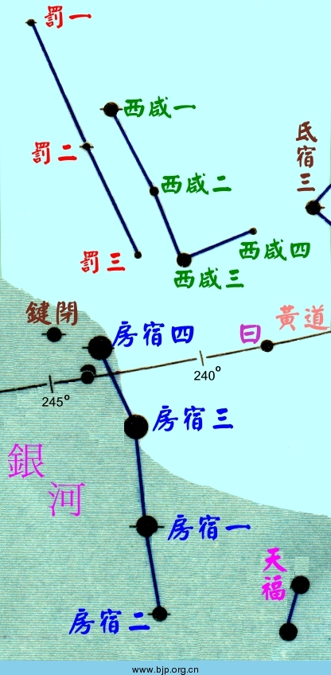
心宿星表：二星官5星增8星
1.心宿：3星增8星
心宿一 天蝎σ 2.89
心宿二 天蝎α 0.96
心宿三 天蝎τ 2.82
2.积卒：3星
积卒一 豺狼θ 4.24
积卒二 豺狼η 3.44
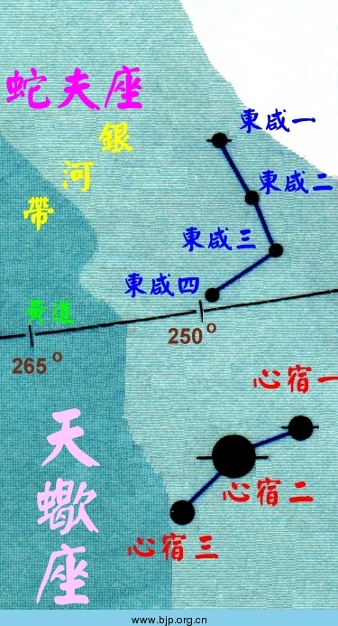
尾宿星表：五星官21星增12星
1.尾宿：9星增1星
尾宿一 天蝎μ1 3.04
尾宿二 天蝎ε 2.29
尾宿三 天蝎ζ 3.62
尾宿四 天蝎η 3.33
尾宿五 天蝎θ 1.87
尾宿六 天蝎ι 3.03
尾宿七 天蝎κ 2.41
尾宿八 天蝎λ 1.63
尾宿九 天蝎υ 2.69
神宫：1星（附尾宿为一座）
神宫 NGC6231 2.60
2.天江：4星增11星
天江一 蛇夫 6.14
天江二 蛇夫36 4.35
天江三 蛇夫θ 3.27
天江四 蛇夫44 4.18
5.龟：5星
龟一 天坛ε1 4.06
龟二 天坛γ 3.31
龟三 天坛δ 3.60
龟四 天坛η 3.77
龟五 天坛ζ 3.12
箕宿星表：三星官8星增1星
1.箕宿：4星
箕宿一 人马γ 2.99
箕宿二 人马δ 2.70
箕宿三 人马ε 1.85
箕宿四 人马η 3.11
2.糠：1星
糠 蛇夫45 4.30
3.杵：3星增1星
杵一 天坛σ 4.56
杵二 天坛α 2.95
杵三 天坛β 2.84
【图见“尾宿”部分】
斗宿星表：十星官52星增30星
1.斗宿：6星增4星
斗宿一 人马φ 3.17
斗宿二 人马λ 2.81
斗宿三 人马μ 3.86
斗宿四 人马σ 2.02
斗宿五 人马τ 3.32
斗宿六 人马ζ 2.60
2.天�a：8星增4星
天�a一 人马 6.20
天�a二 人马 6.20
天�a三 蛇夫58 4.88
天�a四 蛇夫 6.21
天�a五 蛇夫52 6.49
天�a六 蛇夫51 4.80
天�a七 蛇夫 6.07
天�a八 人马X 4.55
3.天弁：9星增5星
天弁一 盾牌α 3.87
天弁二 盾牌δ 4.72
天弁三 盾牌ε 4.90
天弁四 盾牌β 4.24
天弁五 盾牌η 4.85
天弁六 天鹰12 4.04
天弁七 天鹰λ 3.45
天弁八 天鹰15 5.42
天弁九 天鹰14 5.42
4.建：6星增8星
建一 人马ξ2 3.50
建二 人马ο 3.77
建三 人马π 2.89
建四 人马43 4.90
建五 人马ρ1 3.93
建六 人马υ 4.54
5.天鸡：2星增3星
天鸡一 人马55 5.08
天鸡二 人马56 4.89
6.狗：2星增6星
狗一 人马52 4.61
狗二 人马χ1 5.03
7.狗国：4星
狗国一 人马ω 4.70
狗国二 人马60 4.86
狗国三 人马62 4.45
狗国四 人马59 4.45
8.天渊：3星
天渊一 人马β2 4.29
天渊二 人马β1 3.98
天渊三 人马α 3.98
10.鳖：11星
鳖一 望远镜α 3.51
鳖二 南冕η1 5.49
鳖三 南冕ζ 4.75
鳖四 南冕δ 4.59
鳖五 南冕β 4.11
鳖六 南冕α 4.11
鳖七 南冕γ 5.01
鳖八 南冕ε 4.87
鳖九 南冕 5.38
鳖十 南冕κ2 5.65
鳖十一 南冕θ 4.64
牛宿星表：十一星官54星增81星
1.牛宿：6星增9星
牛宿一 摩羯β 3.08
牛宿二 摩羯α2 3.57
牛宿三 摩羯ξ2 5.85
牛宿四 摩羯π 5.25
牛宿五 摩羯ο 5.94
牛宿六 摩羯ρ 4.78
牛宿增六 摩羯α1 4.32
牛宿增七 摩羯ν 4.79
2.天桴：4星增9星
天桴一 天鹰θ 3.23
天桴二 天鹰62 5.69
天桴三 天鹰58 5.62
天桴四 天鹰η 3.87
3.河鼓：3星增9星
河鼓一 天鹰β 3.71
河鼓二 天鹰α 0.77
河鼓三 天鹰γ 2.72
4.右旗：9星增12星
右旗一 天鹰μ 4.45
右旗二 天鹰σ 5.18
右旗三 天鹰δ 3.36
右旗四 天鹰ν 4.64
右旗五 天鹰ι 4.36
右旗六 天鹰
右旗七 天鹰42 5.47
右旗八 天鹰κ 4.93
右旗九 天鹰56 5.78
5.左旗：9星增29星
左旗一 天箭α 4.37
左旗二 天箭β 4.37
左旗三 天箭δ 3.82
左旗四 天箭ζ 5.00
左旗五 天箭γ 3.47
左旗六 天箭13 5.35
左旗七 天箭11 5.56
左旗八 天鹰 5.75
左旗九 天鹰ρ 4.94
6.织女：3星增4星
织女一 天琴α 0.03
织女二 天琴ε1 5.06
织女三 天琴ξ2 4.36
织女增三 天琴μ 5.13
7.渐台：4星增6星
渐台一 天琴δ2 4.30
渐台二 天琴β 3.45
渐台三 天琴γ 3.24
渐台四 天琴ι 5.28
8.辇道：5星增9星
辇道一 天琴R 4.10
辇道二 天琴η 4.39
辇道三 天琴θ 4.36
辇道四 天鹅4 5.19
辇道五 天鹅17 5.02
辇道增五 天鹅η 3.91
辇道增六 天鹅φ 4.70
辇道增七 天鹅β 3.08
9.罗堰：3星增1星
罗堰一 摩羯τ 5.22
罗堰二 摩羯υ 5.10
罗堰三 摩羯17 5.93
10.天田：4星
天田一 显微镜 4.53
天田二 摩羯ω 4.11
天田三 摩羯24 4.51
天田四 摩羯ψ 4.14
11.九坎：4星
九坎一 显微镜θ1 4.82
九坎二 显微镜 6.66
九坎三 显微镜ι 5.11
九坎四 显微镜η 5.33
女宿星表：八星官54星增65星
1.女宿：4星增5星
女宿一 宝瓶ε 3.78
女宿二 宝瓶μ 4.73
女宿三 宝瓶4 6.01
女宿四 宝瓶3 4.45
2.离珠：4星增1星
离珠一 天鹰70 4.93
离珠二 天鹰71 4.33
离珠三 宝瓶1 5.17
离珠四 天鹰69 4.93
3.败瓜：5星增3星
败瓜一 海豚ε 4.03
败瓜二 海豚η 5.38
败瓜三 海豚θ 5.72
败瓜四 海豚ι 5.43
败瓜五 海豚κ 5.05
4.瓠瓜：5星增5星
瓠瓜一 海豚α 3.77
瓠瓜二 海豚γ2 4.27
瓠瓜三 海豚δ 4.43
瓠瓜四 海豚β 3.63
瓠瓜五 海豚ζ 4.68
5.天津：9星增38星
天津一 天鹅γ 2.23
天津二 天鹅δ 2.90
天津三 天鹅ο1 3.82
天津四 天鹅α 1.25
天津五 天鹅ν 3.94
天津六 天鹅τ 3.74
天津七 天鹅υ 4.41
天津八 天鹅ζ 3.21
天津九 天鹅ε 2.48
天津增三十四 天鹅ω2 5.46
天津增三十七 天鹅ο2 3.98
6.奚仲：4星增7星
奚仲一 天鹅κ 3.80
奚仲二 天鹅ι 3.76
奚仲三 天鹅θ 4.49
奚仲四 天鹅16 6.01
7.扶筐：7星增4星
扶筐一 天龙46 5.05
扶筐二 天龙45 4.79
扶筐三 天龙39 5.00
扶筐四 天龙ο 4.66
扶筐五 天龙48 5.49
扶筐六 天龙49 5.53
扶筐七 天龙51 5.42
8.十二国：16星增2星
周一 摩羯η 4.84
周二 摩羯21 6.09
秦一 摩羯θ 4.07
秦二 摩羯30 5.42
代一 摩羯ι 4.28
代二 摩羯37 5.72
赵一 摩羯26 6.20
赵二 摩羯27 6.27
越 摩羯19 5.80
齐 摩羯χ 5.32
楚 摩羯φ 5.24
郑 摩羯20 6.28
魏 摩羯33 5.40
韩 摩羯35 5.80
晋 摩羯36 4.52
燕 摩羯ζ 3.74
虚宿星表：十星官34星增22星
1.虚宿：2星增8星
虚宿一 宝瓶β 2.90
虚宿二 小马α 3.92
2.司命：2星
司命一 宝瓶 6.24
司命二 宝瓶26 5.68
3.司禄：2星增2星
司禄一 飞马11 5.65
司禄二 宝瓶25 5.12
4.司危：2星
司危一 小马β 5.16
司危二 小马9 5.83
5.司非：2星增2星
司非一 小马γ 4.69
司非二 小马δ 4.49
6.哭：2星增4星
哭一 摩羯μ 5.08
哭二 宝瓶38 5.45
7.泣：2星增2星
泣一 宝瓶ρ 5.35
泣二 宝瓶θ 4.17
8.离瑜；3星增3星
离瑜一 显微镜
离瑜二 显微镜ε 4.71
离瑜三 显微镜
9.天垒城：13星
天垒城一 宝瓶ξ 4.68
天垒城二 摩羯46 5.12
天垒城三 摩羯47 6.02
天垒城四 摩羯λ 5.58
天垒城五 摩羯
天垒城六 宝瓶18 5.50
天垒城七 摩羯29 5.33
天垒城八 宝瓶
天垒城九 宝瓶
天垒城十 宝瓶ν 4.50
天垒城十一 宝瓶
天垒城十二 宝瓶17 5.93
天垒城十三 宝瓶19 5.80
10.败臼：4星增1星
败臼一 天鹤γ 3.01
败臼二 天鹤λ 4.46
败臼三 南鱼γ 4.46
败臼四 南鱼19 6.14
危宿星表：十星官50星增70星
1.危宿：3星增11星
危宿一 宝瓶α 2.95
危宿二 飞马θ 3.53
危宿三 飞马ε 2.38
坟墓：4星（附危宿为一座）
坟墓一 宝瓶ζ 3.67
坟墓二 宝瓶γ 3.86
坟墓三 宝瓶η 4.04
坟墓四 宝瓶π 4.80
2.盖屋：2星
盖屋一 宝瓶ο 4.74
盖屋二 宝瓶32 5.31
3.虚梁：4星
虚梁一 宝瓶44 5.77
虚梁二 宝瓶51 5.81
虚梁三 宝瓶κ 5.04
虚梁四 宝瓶 5.74
4.天钱：5星增4星
天钱一 南鱼13 6.47
天钱二 南鱼θ 5.01
天钱三 南鱼ι 4.34
天钱四 南鱼μ 4.50
天钱五 南鱼τ 4.92
5.人：4星增4星
人一 飞马2 4.54
人二 飞马1 4.10
人三 飞马9 4.36
人四 飞马12 5.31
6.杵：3星增2星
杵一 蝎虎1 4.16
杵二 飞马π2 4.29
杵三 飞马23 5.17
7.臼：4星增5星
臼一 天鹅μ1 4.51
臼二 飞马κ 4.13
臼三 飞马ι 3.76
臼四 飞马32 4.82
8.车府：7星增19星
车府一 蝎虎15 4.97
车府二 蝎虎11 4.52
车府三 蝎虎2 4.57
车府四 天鹅ρ 3.98
车府五 天鹅59 4.76
车府六 天鹅ξ 3.72
车府七 天鹅74 5.06
9.造父：5星增5星
造父一 仙王δ 3.75
造父二 仙王ζ 3.35
造父三 仙王λ 5.04
造父四 仙王μ 4.08
造父五 仙王ν 4.26
10.天钩：9星增16星
天钩一 仙王4 5.61
天钩二 天龙 5.71
天钩三 仙王θ 4.22
天钩四 仙王η 3.43
天钩五 仙王α 2.44
天钩六 仙王ξ 4.29
天钩七 仙王26 5.54
天钩八 仙王ι 3.52
天钩九 仙王ο 4.75
室宿星表：十星官106星增46星
1.室宿：2星增7星
室宿一 飞马α 2.49
室宿二 飞马β 2.42
离宫：6星增8星（附室宿为一座）
离宫一 飞马λ 3.95
离宫二 飞马μ 3.48
离宫三 飞马ο 4.79
离宫四 飞马η 2.94
离宫五 飞马τ 4.60
离宫六 飞马υ 4.84
2.腾蛇：22星增14星
腾蛇一 蝎虎α 3.77
腾蛇二 蝎虎4 4.57
腾蛇三 天鹅π2 4.23
腾蛇四 天鹅π1 4.69
腾蛇五 天鹅63 4.58
腾蛇六 天鹅51 5.43
腾蛇七 仙王
腾蛇八 仙王13 5.76
腾蛇九 仙王ε 4.19
腾蛇十 蝎虎β 4.43
腾蛇十一 仙后σ 4.88
腾蛇十二 仙后ρ 4.54
腾蛇十三 仙后τ 4.87
腾蛇十四 仙后AR 4.91
腾蛇十五 蝎虎9 4.66
腾蛇十六 仙女3 4.66
腾蛇十七 仙女7 4.55
腾蛇十八 仙女8 4.84
腾蛇十九 仙女λ 3.81
腾蛇二十 仙女ψ 4.97
腾蛇二十一 仙女κ 4.15
腾蛇二十二 仙女ι 4.29
3.雷电：6星增8星
雷电一 飞马ζ 3.40
雷电二 飞马ξ 4.19
雷电三 飞马σ 5.16
雷电四 飞马55 4.56
雷电五 飞马66 5.11
雷电六 飞马70 4.56
4.土公吏：2星
土公吏一 飞马31 4.84
土公吏二 飞马36 4.62
5.垒壁阵：12星增7星
垒壁阵一 摩羯κ 4.73
垒壁阵二 摩羯ε 4.68
垒壁阵三 摩羯γ 3.68
垒壁阵四 摩羯δ 2.87
垒壁阵五 宝瓶ι 4.29
垒壁阵六 宝瓶σ 4.86
垒壁阵七 宝瓶λ 3.73
垒壁阵八 宝瓶φ 4.22
垒壁阵九 双鱼27 4.90
垒壁阵十 双鱼29 5.15
垒壁阵十一 双鱼33 4.63
垒壁阵十二 双鱼30 4.39
6.羽林军：45星
羽林军一 宝瓶29 6.41
羽林军二 宝瓶35 5.82
羽林军三 宝瓶41 5.35
羽林军四 宝瓶47 5.14
羽林军五 宝瓶49 5.55
羽林军六 南鱼λ 5.47
羽林军七 南鱼 6.16
羽林军八 南鱼ε 5.20
羽林军九 南鱼21 6.01
羽林军十 南鱼 6.33
羽林军十一 宝瓶υ 5.21
羽林军十二 宝瓶68 5.26
羽林军十三 宝瓶66 4.70
羽林军十四 宝瓶
羽林军十五 宝瓶53 5.57
羽林军十六 宝瓶56 6.38
羽林军十七 宝瓶50 5.78
羽林军十八 宝瓶45 5.98
羽林军十九 宝瓶58 6.41
羽林军二十 宝瓶
羽林军二十一 宝瓶
羽林军二十二 宝瓶70 6.21
羽林军二十三 宝瓶74 5.82
羽林军二十四 宝瓶τ2 4.05
羽林军二十五 宝瓶τ1 5.66
羽林军二十六 宝瓶δ 3.17
羽林军二十七 宝瓶77 5.55
羽林军二十八 宝瓶88 3.70
羽林军二十九 宝瓶89 4.73
羽林军三十 宝瓶86 4.50
羽林军三十一 宝瓶101 4.72
羽林军三十二 宝瓶100 6.26
羽林军三十三 宝瓶99 4.40
羽林军三十四 宝瓶98 3.98
羽林军三十五 宝瓶97 5.21
羽林军三十六 宝瓶94 5.22
羽林军三十七 宝瓶ψ3 4.99
羽林军三十八 宝瓶ψ2 4.41
羽林军三十九 宝瓶ψ1 4.24
羽林军四十 宝瓶82 6.20
羽林军四十一 宝瓶83 6.25
羽林军四十二 宝瓶81 5.46
羽林军四十三 宝瓶χ 4.93
羽林军四十四 宝瓶ω1 4.97
羽林军四十五 宝瓶ω2 4.49
9.�a钺：3星增2星
�a钺一 宝瓶103 5.38
�a钺二 宝瓶106 5.26
�a钺三 宝瓶108 5.19
10.八魁：6星
八魁一 鲸鱼6 4.91
八魁二 鲸鱼2 4.57
八魁三 鲸鱼1 6.30
八魁四 鲸鱼3 5.01
八魁五 鲸鱼9 6.41
八魁六 鲸鱼7 4.46
壁宿星表：六星官21星增56星
1.壁宿：2星增23星
壁宿一 飞马γ 2.83
壁宿二 仙女α 2.07
2.天厩；3星增1星
天厩一 仙女θ 4.61
天厩二 仙女ρ 5.16
天厩三 仙女σ 4.51
3.土公：2星增11星
土公一 双鱼32 5.72
土公二 双鱼41 5.40
4.霹雳：5星增8星
霹雳一 双鱼β 4.53
霹雳二 双鱼γ 3.69
霹雳三 双鱼θ 4.28
霹雳四 双鱼ι 4.13
霹雳五 双鱼ω 4.01
5.云雨：4星增9星
云雨一 双鱼κ 4.94
云雨二 双鱼13 6.41
云雨三 双鱼21 5.79
云雨四 双鱼λ 4.50
云雨增七 双鱼19（双鱼TX）4.79-5.20
6.�a�@：5星
�a�@一 鲸鱼48 5.13
�a�@二 鲸鱼
�a�@三 鲸鱼 5.60
�a�@四 鲸鱼υ 4.00
�a�@五 鲸鱼56 4.94
奎宿星表：九星官42星增53星
1.奎宿：16星增22星
奎宿一 仙女η 4.40
奎宿二 仙女ζ 4.08
奎宿三 双鱼65 6.10
奎宿四 仙女ε 4.34
奎宿五 仙女δ 3.27
奎宿六 仙女π 4.34
奎宿七 仙女ν 4.53
奎宿八 仙女μ 3.86
奎宿九 仙女β 2.07
奎宿十 双鱼82 5.17
奎宿十一 双鱼τ 4.51
奎宿十二 双鱼91 5.25
奎宿十三 双鱼υ 4.76
奎宿十四 双鱼φ 4.65
奎宿十五 双鱼χ 4.66
奎宿十六 双鱼ψ1 5.34
奎宿增十五 双鱼σ 5.50
2.王良：5星增5星
王良一 仙后β 2.27
王良二 仙后κ 4.16
王良三 仙后η 3.44
王良四 仙后α 2.23
王良五 仙后λ 4.73
王良增五 仙后υ 4.64
6.阁道：6星增5星
阁道一 仙后ι 4.52
阁道二 仙后ε 3.38
阁道三 仙后δ 2.68
阁道四 仙后θ 4.33
阁道五 仙后ν 4.89
阁道六 仙后ο 4.54
阁道增五 仙后μ 5.19
7.外屏：7星增15星
外屏一 双鱼δ 4.43
外屏二 双鱼ε 4.28
外屏三 双鱼ζ 5.24
外屏四 双鱼μ 4.84
外屏五 双鱼ν 4.44
外屏六 双鱼ξ 4.62
外屏七 双鱼α 4.33
8.天溷：4星增6星
天溷一 鲸鱼21 6.17
天溷二 鲸鱼φ3 5.31
天溷三 鲸鱼18 6.17
天溷四 鲸鱼φ1 5.76
娄宿星表：六星官33星增64星
1.娄宿：3星增15星
娄宿一 白羊β 2.64
娄宿二 白羊γ 4.58
娄宿三 白羊α 2.01
娄宿增六 三角α 3.41
2.天大将军：11星增16星
天大将军一 仙女γ 2.33
天大将军二 英仙φ 4.07
天大将军三 仙女51 3.61
天大将军四 仙女49 5.29
天大将军五 仙女χ 5.01
天大将军六 仙女υ 4.10
天大将军七 仙女τ 4.96
天大将军八 仙女56 5.71
天大将军九 三角β 3.00
天大将军十 三角γ 4.01
天大将军十一 三角δ 4.87
3.右更：5星增5星
右更一 双鱼ρ 5.38
右更二 双鱼η 3.62
右更三 双鱼π 5.57
右更四 双鱼ο 4.26
右更五 双鱼101 6.25
4.左更：5星增7星
左更一 白羊ν 5.45
左更二 白羊μ 5.74
左更三 白羊ο 5.78
左更四 白羊σ 5.52
左更五 白羊π 5.26
5.天仓：6星增18星
天仓一 鲸鱼ι 3.56
天仓二 鲸鱼η 3.45
天仓三 鲸鱼θ 3.60
天仓四 鲸鱼ζ 3.73
天仓五 鲸鱼τ 3.50
天仓六 鲸鱼57 5.45
6.天庾：3星增3星
天庾一 天炉υ 4.60
天庾二 天炉ω 4.90
天庾三 天炉β 4.46
胃宿星表：七星官39星增57星
1.胃宿：3星增5星
胃宿一 白羊35 4.67
胃宿二 白羊39 4.54
胃宿三 白羊41 3.63
2.大陵：8星增20星
大陵一 英仙9 5.01
大陵二 英仙τ 3.95
大陵三 英仙ι 4.05
大陵四 英仙κ 3.80
大陵五 英仙β 2.12
大陵六 英仙ρ 3.39
大陵七 英仙16 4.24
大陵八 英仙12 4.93
大陵增十八 英仙ω 4.63
4.天船：9星增9星
天船一 英仙η 3.76
天船二 英仙γ 2.93
天船三 英仙α 1.79
天船四 英仙ψ 4.23
天船五 英仙δ 3.01
天船六 英仙48 3.98
天船七 英仙μ 4.14
天船八 英仙b1 4.62
天船九 鹿豹 5.22
6.天廪：4星增2星
天廪一 金牛5 4.16
天廪二 金牛4 5.16
天廪三 金牛ξ 3.74
天廪四 金牛ο 3.60
7.天�铮�13星增20星
天�镆弧 【ㄓ悝痢 �2.53
天�锒� 鲸鱼κ 4.83
天�锶� 鲸鱼λ 4.70
天�锼摹 【ㄓ悝獭 �4.27
天�镂濉 【ㄓ悝�1 4.37
天�锪� 鲸鱼ξ2 4.28
天�锲摺 【ㄓ悝汀 �4.89
天�锇恕 【ㄓ悝谩 �3.47
天�锞拧 【ㄓ悝摹 �4.37
天�锸� 鲸鱼75 5.38
天�锸�一 鲸鱼70 5.44
天�锸�二 鲸鱼63 5.96
天�锸�三 鲸鱼66 5.67
昴宿星表：九星官47星增37星
1.昴宿：7星增5星
昴宿一 金牛17 3.74
昴宿二 金牛19 4.32
昴宿三 金牛21 5.78
昴宿四 金牛20 3.89
昴宿五 金牛23
昴宿六 金牛η 2.87
昴宿七 金牛27 3.64
昴宿增六 金牛16 5.47
昴宿增十二 金牛28 5.10
4.卷舌：6星增6星
卷舌一 英仙ν 3.77
卷舌二 英仙ε 2.89
卷舌三 英仙ξ 4.04
卷舌四 英仙ζ 2.85
卷舌五 英仙ο 3.83
卷舌六 英仙40 4.99
6.砺石：4星
砺石一 金牛ψ 5.23
砺石二 金牛44 5.41
砺石三 金牛χ 5.37
砺石四 金牛φ 4.95
7.天阴：5星增4星
天阴一 金牛13 5.70
天阴二 白羊ζ 4.87
天阴三 白羊τ 5.27
天阴四 白羊δ 4.35
天阴五 白羊66 6.05
8.�e藁：6星增5星
�e藁一 鲸鱼ρ 4.90
�e藁二 鲸鱼77 5.76
�e藁三 鲸鱼67 5.53
�e藁四 鲸鱼71 6.36
�e藁五 鲸鱼 6.57
�e藁六 鲸鱼ε 4.85
�e藁增二 鲸鱼ο 2-11
9.天苑：16星增16星
天苑一 波江γ 2.95
天苑二 波江π 4.42
天苑三 波江δ 3.54
天苑四 波江ε 3.73
天苑五 波江ζ 4.80
天苑六 波江η 4.89
天苑七 鲸鱼π 4.25
天苑八 波江τ1 4.47
天苑九 波江τ2 4.75
天苑十 波江τ3 4.09
天苑十一 波江τ4 3.69
天苑十二 波江τ5 4.27
天苑十三 波江τ6 4.23
天苑十四 波江τ7 5.24
天苑十五 波江τ8 4.65
天苑十六 波江τ9 4.66
天苑增三 天炉α 3.82
毕宿星表：十四星官89星增84星
1.毕宿：8星增13星
毕宿一 金牛ε 3.53
毕宿二 金牛68 4.32
毕宿三 金牛δ 4.29
毕宿四 金牛γ 3.65
毕宿五 金牛α 0.85
毕宿六 金牛θ1 3.40
毕宿七 金牛71 4.50
毕宿八 金牛λ 3.47
毕宿增三 金牛υ 4.30
毕宿增七 金牛μ 4.29
2.天街：2星增4星
天街一 金牛κ 4.22
天街二 金牛ω 4.94
3.天高：4星增4星
天高一 金牛ι 5.10
天高二 金牛97 5.10
天高三 金牛104 4.93
天高四 金牛109 4.98
4.诸王：6星增4星
诸王一 金牛136 4.58
诸王二 金牛125 5.20
诸王三 金牛118 5.49
诸王四 金牛103 5.52
诸王五 金牛99 5.81
诸王六 金牛τ 4.29
5.五车：5星增18星
五车一 御夫ι 2.69
五车二 御夫α 0.08
五车三 御夫β 1.90
五车四 御夫θ 2.65
五车五 金牛β 1.65
6.柱：9星
柱一 御夫ε 3.03
柱二 御夫ζ 3.69
柱三 御夫η 3.18
柱四 御夫υ 4.72
柱五 御夫ν 3.97
柱六 御夫τ 4.51
柱七 御夫χ 4.71
柱八 御夫26 5.42
柱九 御夫
7.咸池：3星
咸池一 御夫ρ 5.23
咸池二 御夫 6.10
咸池三 御夫λ 4.68
8.天潢：5星增2星
天潢一 御夫19 5.07
天潢二 御夫φ 5.08
天潢三 御夫14 5.03
天潢四 御夫σ 5.02
天潢五 御夫μ 4.82
10.天节：8星
天节一 金牛π 4.69
天节二 金牛ρ 4.65
天节三 金牛57 5.60
天节四 金牛79 5.04
天节五 金牛90 4.29
天节六 金牛93 5.47
天节七 金牛88 4.27
天节八 金牛66 5.12
11.九州殊口：6星增10星
九州殊口一 波江39 4.89
九州殊口二 波江ο1 4.04
九州殊口三 波江ξ 5.17
九州殊口四 波江ν 3.93
九州殊口五 波江56 5.80
九州殊口六 波江55 6.00
九州殊口增七 波江ο2 4.45
12.参旗：9星增11星
参旗一 猎户ο1 4.71
参旗二 猎户ο2 4.06
参旗三 猎户6 5.20
参旗四 猎户π1 4.64
参旗五 猎户π2 4.35
参旗六 猎户π3 3.19
参旗七 猎户π4 3.69
参旗八 猎户π5 3.71
参旗九 猎户π6 4.47
参旗增九 猎户ρ 4.45
13.九�澹�9星增5星
九�逡弧 〗鹋！ �5.34
九�宥� 波江μ 4.02
九�迦� 波江ω 4.39
九�逅摹 〔�江63 5.41
九�逦濉 〔�江64 4.80
九�辶� 波江60 5.05
九�迤摺 〔�江58 5.51
九�灏恕 〔�江54 4.34
九�寰拧 √焱�1 5.76
九�逶鏊摹 〔�江53 3.88
14.天园：13星增6星
天园一 凤凰δ 3.95
天园二 波江χ 3.70
天园三 波江φ 3.56
天园四 波江κ 4.25
天园五 波江s 4.76
天园六 波江θ 3.24
天园七 波江h 4.61
天园八 波江f 4.32
天园九 波江g 4.19
天园十 波江υ4 3.57
天园十一 波江υ3 3.99
天园十二 波江υ2 3.83
天园十三 波江υ1 4.51
觜宿星表：三星官16星增17星
1.觜宿：3星
觜宿一 猎户λ 3.50
觜宿二 猎户φ1 4.39
觜宿三 猎户φ2 4.09
2.司怪：4星增6星
司怪一 金牛139 4.83
司怪二 双子1 4.12
司怪三 猎户χ2 4.64
司怪四 猎户χ1 4.39
3.座旗：9星增11星
座旗一 御夫ψ6 5.22
座旗二 天猫16 4.90
座旗三 御夫ψ4 5.04
座旗四 御夫ψ5 5.25
座旗五 御夫ψ2 4.80
座旗六 御夫ψ7 5.02
座旗七 御夫ψ3 5.34
座旗八 御夫51 5.72
座旗九 御夫59 6.10
参宿星表：六星官25星增49星
1.参宿：7星增37星
参宿一 猎户ζ 1.77
参宿二 猎户ε 1.70
参宿三 猎户δ 2.23
参宿四 猎户α 0.50
参宿五 猎户γ 1.64
参宿六 猎户κ 2.06
参宿七 猎户β 0.12
参宿增一 猎户σ 4.00
参宿增三 猎户η 3.35
参宿增二十六 麒麟β 3.95
参宿增二十八 麒麟γ 4.60
参宿增三十六 猎户υ 4.60
伐：3星增2星（附参宿为一座）
伐一 猎户42 4.60
伐二 猎户θ 5.00
伐三 猎户ι 2.77
2.玉井：4星增2星
玉井一 波江λ 4.27
玉井二 波江ψ 4.81
玉井三 波江β 2.79
玉井四 猎户τ 3.59
3.军井：4星增1星
军井一 天兔ι 4.45
军井二 天兔κ 4.36
军井三 天兔λ 4.29
军井四 天兔ν 5.30
4.屏：2星
屏一 天兔μ 3.31
屏二 天兔ε 3.19
5.厕：4星增7星
厕一 天兔α 2.58
厕二 天兔β 2.84
厕三 天兔γ 3.60
厕四 天兔δ 3.81
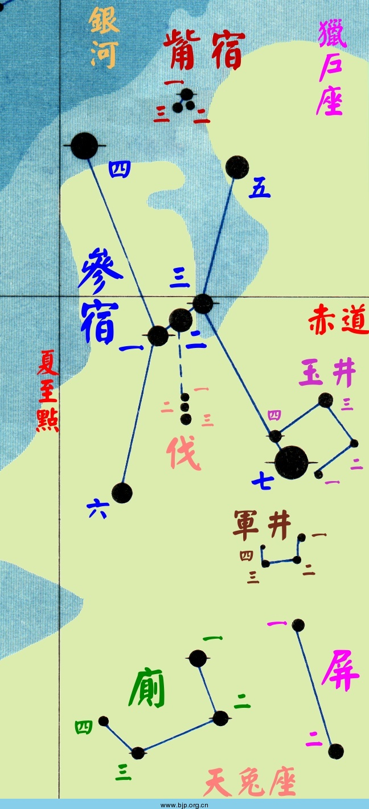
井宿星表：十九星官63星增124星
1.井宿：8星增17星
井宿一 双子μ 2.88
井宿二 双子ν 4.15
井宿三 双子γ 1.93
井宿四 双子ξ 3.36
井宿五 双子ε 2.98
井宿六 双子36 5.30
井宿七 双子ζ 3.79
井宿八 双子λ 3.58
钺：1星增1星（附井宿为一座）
钺 双子η 3.28
2.水府：4星增8星
水府一 猎户ν 4.42
水府二 猎户ξ 4.45
水府三 猎户72 5.36
水府四 猎户69 4.97
3.天樽：3星增9星
天樽一 双子57 5.06
天樽二 双子δ 3.53
天樽三 双子ω 5.18
4.五诸侯：5星增5星
五诸侯一 双子θ 3.62
五诸侯二 双子τ 4.43
五诸侯三 双子ι 3.80
五诸侯四 双子υ 4.08
五诸侯五 双子φ 4.99
5.北河：3星增4星
北河一 双子ρ1 4.18
北河二 双子α 1.58
北河三 双子β 1.14
8.水位：4星增11星
水位一 小犬6 4.57
水位二 小犬11 5.27
水位三 巨蟹8 5.16
水位四 巨蟹ζ 4.67
9.南河：3星增10星
南河一 小犬ε 4.99
南河二 小犬β 2.90
南河三 小犬α 0.38
10.四渎：4星增6星
四渎一 双子 5.16
四渎二 麒麟17 4.97
四渎三 麒麟13 4.49
四渎四 麒麟ε 4.44
11.阙丘：2星增7星
阕丘一 麒麟18 4.50
阕丘二 麒麟δ 4.15
12.军市：6星增5星
军市一 大犬β 1.98
军市二 大犬ν3 4.43
军市三 大犬15 4.84
军市四 大犬π 4.68
军市五 大犬ο1 3.87
军市六 大犬ξ1 4.33
军市增五 大犬ο2 3.02
天狼增二 大犬θ 4.05
天狼增四 大犬γ 4.10
15.丈人：2星
丈人一 天鸽α 2.64
丈人二 天鸽ε 3.87
16.子：2星增1星
子一 天鸽λ 4.87
子二 天鸽β 3.12
17.孙：2星增4星
孙一 天鸽κ 4.37
孙二 天鸽θ 5.02
孙增一 大犬ζ 3.02
孙增二 大犬λ 4.45
老人增一 船尾τ 2.93
老人增二 船尾ν 3.17
19.弧矢：9星增24星
弧矢一 大犬δ 1.86
弧矢二 大犬η 2.44
弧矢三 船尾c 5.09
弧矢四 船尾 4.78
弧矢五 船尾ο 4.50
弧矢六 船尾k 3.82
弧矢七 大犬ε 1.50
弧矢八 大犬κ 3.96
弧矢九 船尾π 2.70
弧矢增二 大犬σ 3.45
弧矢增三 大犬ω 4.00
弧矢增十七 船尾ξ 3.34
弧矢增二十二 船尾ζ 2.25
弧矢增二十四 船尾σ 3.25
鬼宿星表：六星官29星增57星
1.鬼宿：4星增18星
鬼宿一 巨蟹θ 5.35
鬼宿二 巨蟹η 5.33
鬼宿三 巨蟹γ 4.66
鬼宿四 巨蟹δ 3.94
2.��：4星增11星
��一 巨蟹ψ 5.73
��二 巨蟹λ 5.98
��三 巨蟹φ1 5.57
��四 巨蟹15 5.64
3.外厨：6星增17星
外厨一 长蛇c 3.93
外厨二 长蛇F 4.60
外厨三 长蛇14 5.30
外厨四 长蛇
外厨五 长蛇
外厨六 长蛇
外厨增一 麒麟ζ 3.40
天记增一 船帆ψ 3.95
5.天狗：7星
天狗一 船帆e 4.13
天狗二 船帆h 4.07
天狗三 罗盘 5.70
天狗四 罗盘β 3.97
天狗五 罗盘α 3.68
天狗六 罗盘γ 4.01
天狗七 罗盘δ 4.89
6.天社：6星增5星
天社一 船帆γ 1.78
天社二 船帆b 3.79
天社三 船帆δ 2.02
天社四 船帆 5.72
天社五 船帆κ 2.50
天社六 船帆N 3.18
柳宿星表：二星官11星增15星
1.柳宿：8星增15星
柳宿一 长蛇δ 4.16
柳宿二 长蛇σ 4.44
柳宿三 长蛇η 4.30
柳宿四 长蛇ρ 4.36
柳宿五 长蛇ε 3.38
柳宿六 长蛇ζ 3.11
柳宿七 长蛇ω 4.97
柳宿八 长蛇θ 3.88
柳宿增三 巨蟹α 4.25
柳宿增十 巨蟹β 3.50
2.酒旗：3星增5星
酒旗一 狮子ψ 5.35
酒旗二 狮子ξ 4.97
酒旗三 狮子ω 5.41
星宿星表：四星官31星增95星
1.星宿：7星增15星
星宿一 长蛇α 1.98
星宿二 长蛇τ1 4.60
星宿三 长蛇τ2 4.57
星宿四 长蛇ι 3.91
星宿五 长蛇27 4.82
星宿六 长蛇26 4.79
星宿七 长蛇 6.15
2.天相：3星增12星
天相一 六分仪18 5.60
天相二 六分仪
天相三 六分仪ε 5.27
3.轩辕：17星增57星
轩辕一 天猫 3.98
轩辕二 天猫 4.58
轩辕三 天猫38 3.84
轩辕四 天猫α 3.13
轩辕五 狮子 5.92
轩辕六 狮子15 5.66
轩辕七 狮子κ 4.46
轩辕八 狮子λ 4.31
轩辕九 狮子ε 2.98
轩辕十 狮子μ 3.88
轩辕十一 狮子ζ 3.44
轩辕十二 狮子γ 2.28
轩辕十三 狮子η 3.52
轩辕十四 狮子α 1.35
轩辕十五 狮子ο 3.52
轩辕十六 狮子ρ 3.85
轩辕十七 狮子
轩辕增二十二 巨蟹ρ2 5.20
4.内平：4星增11星
内平一 小狮22 6.49
内平二 小狮21 4.51
内平三 小狮13 6.14
内平四 小狮20 5.39
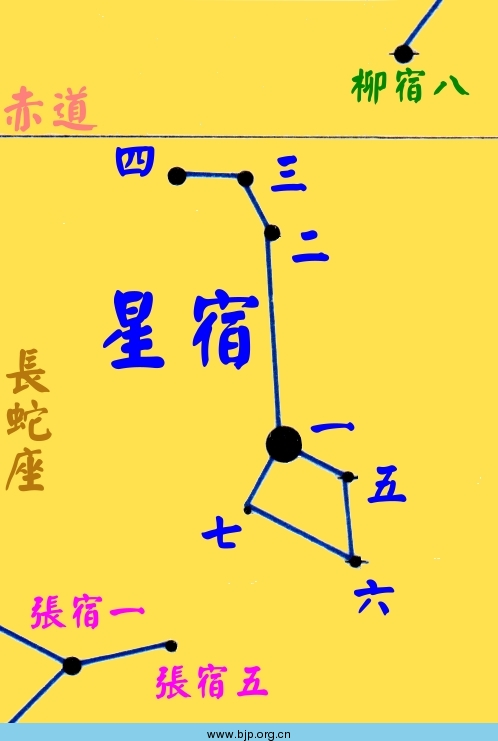
张宿星表：一星官6星增4星
1.张宿：6星增4星
张宿一 长蛇υ1 4.12
张宿二 长蛇λ 3.61
张宿三 长蛇μ 3.81
张宿四 长蛇 4.96
张宿五 长蛇κ 5.06
张宿六 长蛇φ 4.91
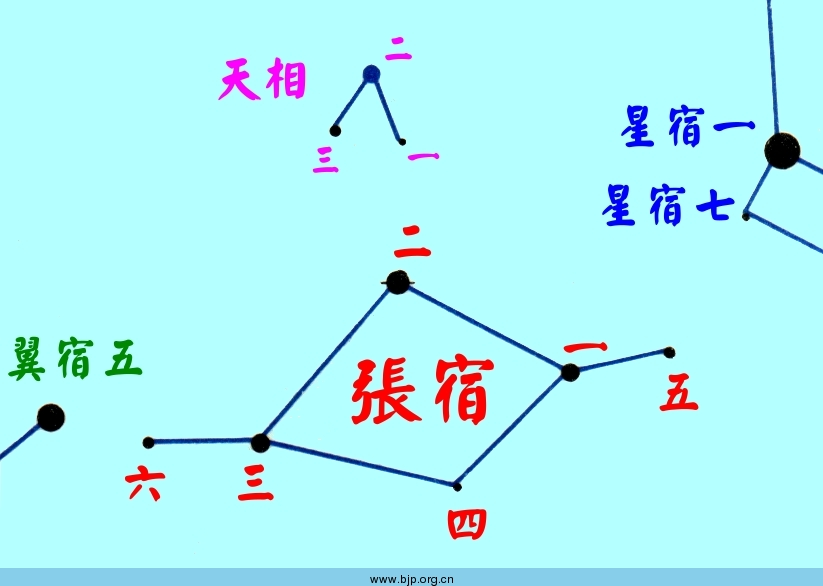
翼宿一 巨爵α 4.08
翼宿二 巨爵γ 4.08
翼宿三 巨爵ζ 4.73
翼宿四 巨爵λ 5.09
翼宿五 长蛇ν 3.11
翼宿六 巨爵η 5.18
翼宿七 巨爵δ 3.56
翼宿八 巨爵ι 5.48
翼宿九 巨爵κ 5.94
翼宿十 巨爵ε 4.83
翼宿十一 巨爵 5.53
翼宿十二 六分仪41 5.82
翼宿十三 巨爵θ 4.70
翼宿十四 巨爵 5.26
翼宿十五 巨爵 6.26
翼宿十六 巨爵β 4.48
翼宿十七 巨爵
翼宿十八 巨爵 5.79
翼宿十九 巨爵
翼宿二十 长蛇χ 4.94
翼宿二十一 巨爵
翼宿二十二 巨爵
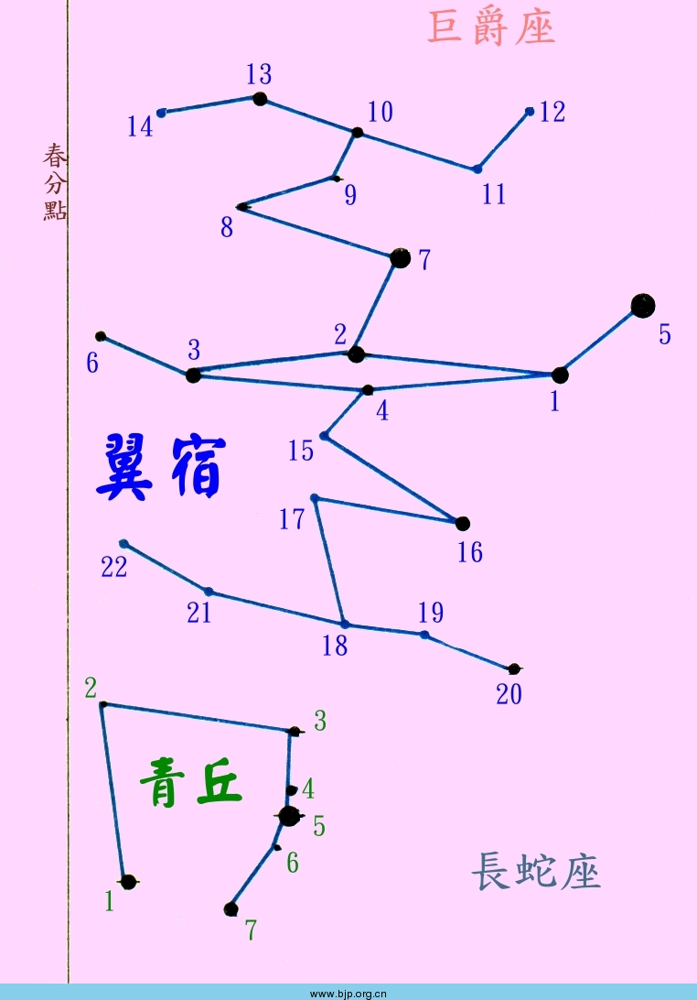
轸宿星表：二星官14星增8星
1.轸宿：4星增5星
轸宿一 乌鸦γ 2.59
轸宿二 乌鸦ε 3.00
轸宿三 乌鸦δ 2.95
轸宿四 乌鸦β 2.65
2.青邱：7星增3星
青邱一 长蛇β 4.31
青邱二 长蛇 5.95
青邱三 巨爵17 4.95
青邱四 长蛇 5.15
青邱五 长蛇ξ 3.56
青邱六 长蛇 5.98
青邱七 长蛇ο 4.72
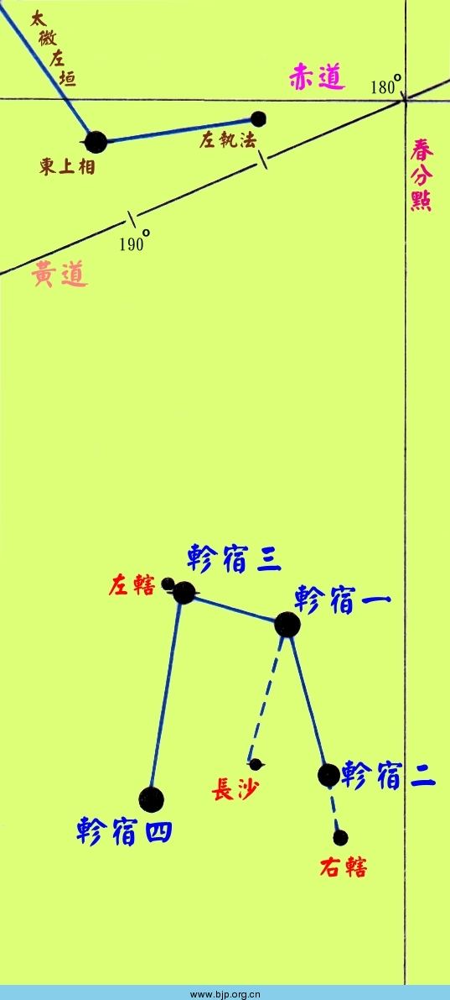
近南极星表：二十三星官130星增20星古无
1.海山：6星增2星
海山一 船底s 6.16
海山二 船底η 6.21
海山三 半人马λ 3.13
海山四 苍蝇λ 3.64
海山五
海山六
2.十字：4星
十字架一 南十字γ 1.63
十字架二 南十字α 0.79
十字架三 南十字β 1.25
十字架四 南十字δ 2.80
3.马尾：3星
马尾一 半人马G 4.84
马尾二 半人马ρ 3.99
马尾三 半人马δ 2.60
4.马腹：3星
马腹一 半人马β 0.61
马腹二 半人马 6.68
马腹三 半人马 5.24
5.蜜蜂：4星
蜜蜂一 苍蝇β 3.05
蜜蜂二 苍蝇ε 4.08
蜜蜂三 苍蝇α 2.69
蜜蜂四 苍蝇δ 3.63
6.三角形：3星增4星
三角形一 南三角γ 2.89
三角形二 南三角β 2.85
三角形三 南三角α 1.92
7.异雀：9星
异雀一 天燕ζ 4.76
异雀二 天燕ι 5.39
异雀三 天燕β 4.23
异雀四 天燕γ 3.86
异雀五 南极δ 4.32
异雀六 天燕δ2 5.27
异雀七 天燕η 4.89
异雀八 天燕α 3.83
异雀九 天燕ε 5.06
8.孔雀：11星增4星
孔雀一 孔雀η 3.62
孔雀二 孔雀π 4.35
孔雀三 孔雀ν 4.64
孔雀四 孔雀λ 4.22
孔雀五 孔雀κ 4.44
孔雀六 孔雀δ 3.56
孔雀七 孔雀β 3.42
孔雀八 孔雀ζ 4.01
孔雀九 孔雀ε 3.96
孔雀十 孔雀γ 4.22
孔雀十一 孔雀α 1.94
9.波斯：11星
波斯一
波斯二 印第安α 3.11
波斯三
波斯四
波斯五
波斯六
波斯七
波斯八
波斯九
波斯十
波斯十一
10.蛇尾：4星
蛇尾一 水蛇β 2.80
蛇尾二 南极γ2 5.11
蛇尾三 南极β 4.15
蛇尾四 南极α 5.15
11.蛇腹：4星
蛇腹一 水蛇ζ 4.84
蛇腹二 水蛇ε 4.11
蛇腹三 水蛇δ 4.09
蛇腹四 水蛇η2 4.69
12.蛇首：2星
蛇首一 水蛇α 2.86
蛇首二 网罟β 3.84
13.鸟喙：7星增1星
鸟喙一 杜鹃α 2.86
鸟喙二 杜鹃δ 4.53
鸟喙三 杜鹃 5.97
鸟喙四 杜鹃β1 4.37
鸟喙五 杜鹃ρ 5.40
鸟喙六 杜鹃ζ 4.23
鸟喙七 杜鹃ε 4.50
鸟喙增一 杜鹃η 5.00（站长添加，可能不对）
14.鹤：12星增2星
鹤一 天鹤α 1.74
鹤二 天鹤β 2.10
鹤三 天鹤ε 3.49
鹤四 天鹤η 4.86
鹤五 杜鹃γ 4.01
鹤六 天鹤ζ 4.12
鹤七 天鹤ι 3.90
鹤八 天鹤θ 4.28
鹤九
鹤十
鹤十一 天鹤δ2 3.99
鹤十二 天鹤μ1 4.79
15.火鸟：10星增1星
火鸟一 玉夫β 4.37
火鸟二 凤凰ι 4.71
火鸟三 凤凰σ 5.18
火鸟四 凤凰ε 3.88
火鸟五 凤凰κ 3.94
火鸟六 凤凰α 2.39
火鸟七 凤凰μ 4.59
火鸟八 凤凰λ1 4.77
火鸟九 凤凰β 3.31
火鸟十 凤凰γ 3.41
16.水委：3星
水委一 波江α 0.46
水委二 凤凰ζ 4.37
水委三 凤凰η 4.36
17.附白：2星
附白一 水蛇γ 3.24
附白二 水蛇κ 5.01
18.夹白：2星
夹白一 剑鱼θ 4.83
夹白二 网罟α 3.27
19.金鱼：5星增1星
金鱼一 剑鱼γ 4.25
金鱼二 剑鱼α 3.27
金鱼三 剑鱼β 3.76
金鱼四 剑鱼δ 4.35
金鱼五 剑鱼η2 5.01
20.海石：5星增3星
海石一 船底ε 1.86
海石二 船底ι 2.25
海石三 船底h 4.10
海石四 船底l 3.71
海石五 船底υ 2.96
21.飞鱼：6星
飞鱼一 飞鱼α 4.00
飞鱼二 飞鱼γ1 3.78
飞鱼三 飞鱼β 3.77
飞鱼四 飞鱼κ1 5.37
飞鱼五 飞鱼δ 3.98
飞鱼六 飞鱼ζ 3.95
22.南船：5星增1星
南船一 船底q 3.41
南船二 船底p 3.32
南船三 船底θ 2.76
南船四 船底ω 3.32
南船五 船底β 1.68
23.小斗：9星增1星
小斗一 �i蜓β 4.26
小斗二 �i蜓ε 4.91
小斗三 �i蜓γ 4.11
小斗四 �i蜓δ2 4.45
小斗五 �i蜓ζ 5.11
小斗六 �i蜓ι 5.36
小斗七 �i蜓η 5.47
小斗八 �i蜓θ 4.35
小斗九 �i蜓α 4.07
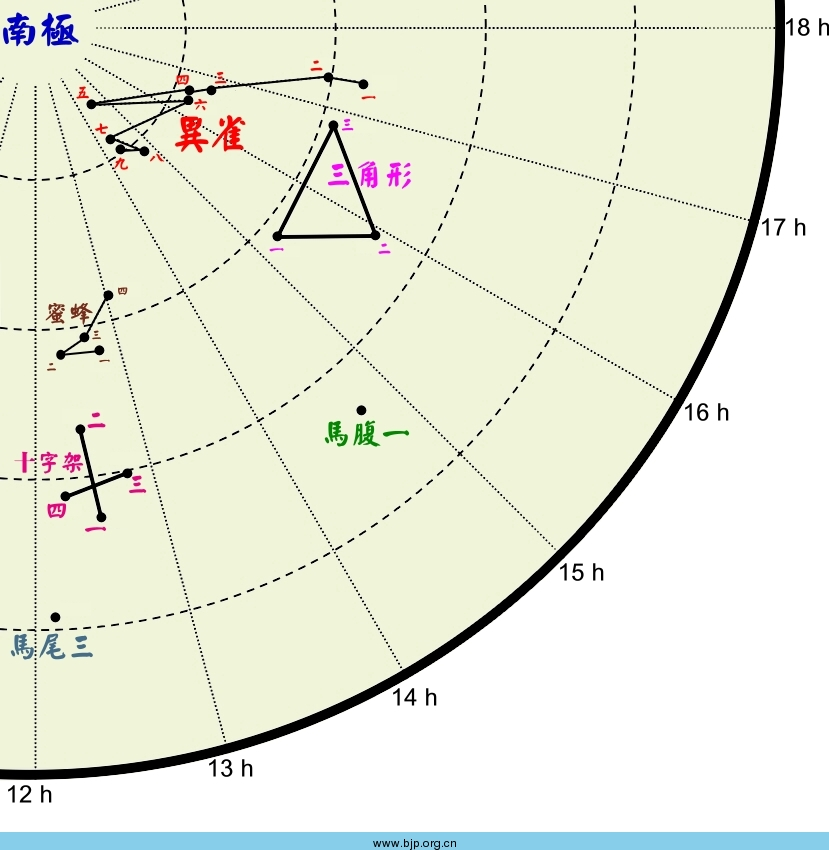
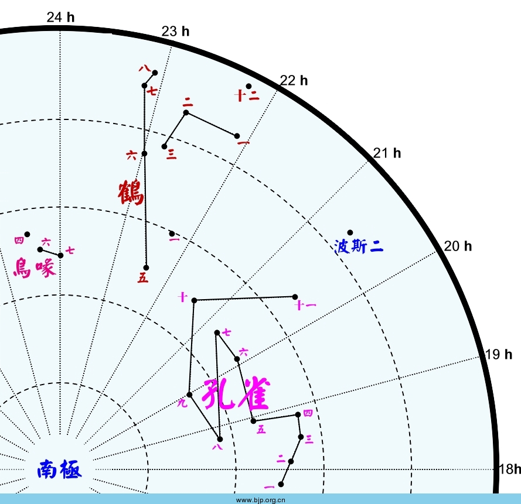
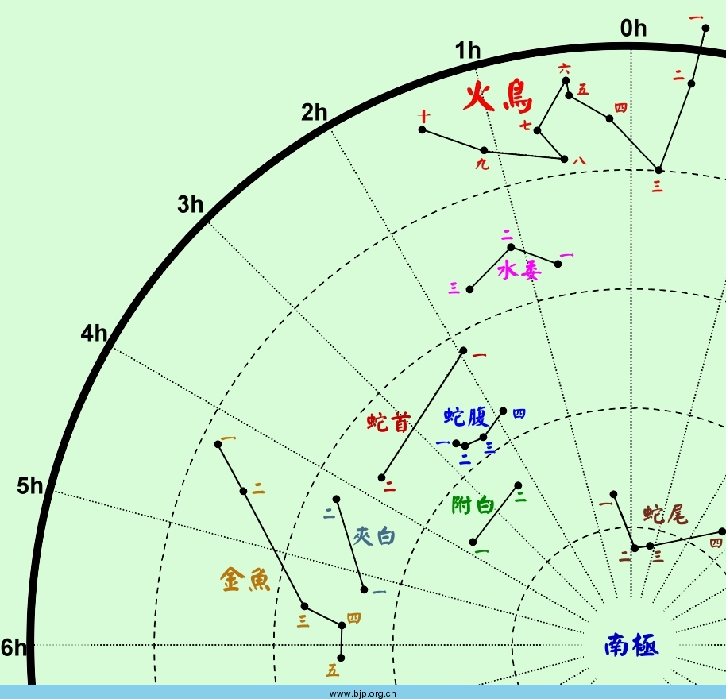
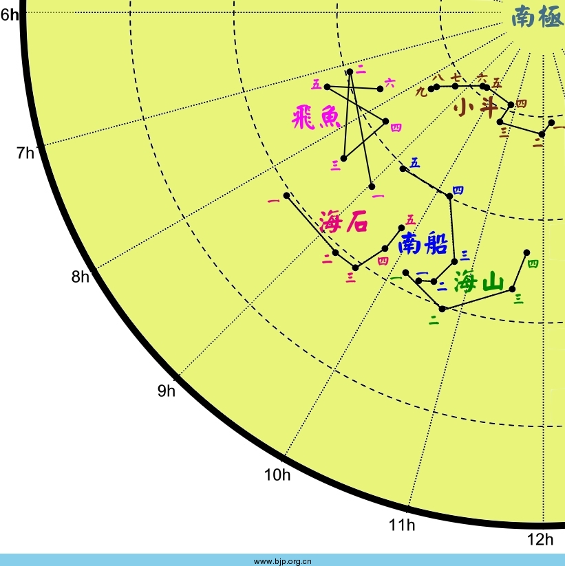
论坛网友Xmas提供的大图：